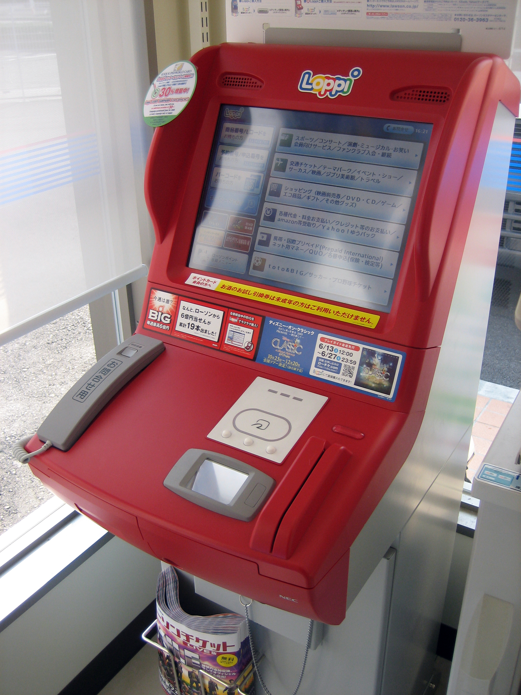

🏪 Where to Buy TCG at MSRP in Japan
Official stores, online shops, and how to avoid scalpers
Updated: March 2026
✅ Golden rule: If it's above MSRP, walk away. Patience = profit. New stock rotates weekly at major retailers.
📊 MSRP Probability: Chance of finding current Pokemon/One Piece products at retail price on any random visit. Higher % = more reliable stock.
🗺️ Store Locations
Click any location to open in Google Maps:
🏬 Major Retail Chains (In-Store)
Best for new releases. Stock arrives on release day, sells out fast. Go early morning.
Yodobashi Camera
ヨドバシカメラ
Major electronics retailer. TCG section usually on toy floor.
Locations:
•
Akihabara 📊 50% ·
Shinjuku 📊 65% ·
Umeda 📊 75%
Stock: Pokemon, One Piece, other TCGs
Tip: Check online stock before visiting
Bic Camera
ビックカメラ
Similar to Yodobashi. Often has lottery system for hot releases.
Locations:
•
Yurakucho 📊 60% ·
Ikebukuro 📊 70%
Tip: Bic Camera app shows stock levels
Animate
アニメイト
Anime goods chain. Strong One Piece selection.
Locations:
•
Ikebukuro flagship 📊 50%
Tip: Pre-orders available for upcoming sets
🎮 Official Brand Stores
Best selection, exclusive promos, but high demand.
Pokemon Center
ポケモンセンター
THE source for Pokemon TCG. Exclusive promos with purchase.
Locations:
•
Shibuya 📊 80% ·
Ikebukuro 📊 85% ·
Skytree 📊 90%
Stock: All current Pokemon sets
Tip: Weekday mornings = shortest lines
Jump Shop
ジャンプショップ
Shonen Jump official store. One Piece TCG + exclusive goods.
Locations:
•
Tokyo Station 📊 35% ·
Osaka 📊 45%
Tip: Limited edition collaborations sometimes available
Bandai Card Station
バンダイカードステーション
Official Bandai TCG events and sales.
Find events: Official Events ·
Card Fest
Register: Download
TCG+ App for store tournaments
Tip: Tournament venues often sell at MSRP
🏪 Convenience Stores
Lottery system for hot releases. Random restocks.
7-Eleven
セブンイレブン
Lottery tickets (くじ) for new Pokemon releases.
How: Buy lottery ticket → win = buy box at MSRP
Tip: Check 7-Eleven app for lottery announcements
Pokemon lottery 📊 30%
Lawson
ローソン
Sometimes stocks loose packs. Loppi machine for pre-orders.
Tip: Loppi reservations open weeks before release
Pokemon + One Piece 📊 25%
Family Mart
ファミリーマート
Occasional TCG stock. Less reliable than 7-Eleven/Lawson.
Tip: Worth checking if passing by
Random stock 📊 15%
💻 Online (MSRP)
Quick links to TCG search results. Open → check stock → close if none.
Pokemon Center Online
ポケモンセンターオンライン
Official Pokemon store. MSRP guaranteed.
Quick search: [1]ブースターパック
Amazon Japan
Amazon.co.jp
⚠️ ONLY buy from "Amazon.co.jp" as seller.
Pokemon: [1]カード
One Piece: No official seller — skip Amazon for OP TCG
Yodobashi.com
ヨドバシ.com
Free shipping. Restocks at midnight JST.
Pokemon: [1]カード
One Piece: [1]カード
Rakuten Books
楽天ブックス
Online 📊 35%
🔴 Where NOT to Buy (Scalper Territory)
⚠️
Avoid these unless you know current market prices:
- Mercari / Yahoo Auctions — Secondary market. Prices above MSRP.
- Card shops (トレカショップ) — Mandarake, Surugaya, etc. sell above MSRP for OOP sets.
- Amazon marketplace sellers — Third-party sellers = scalper prices.
- Akihabara street vendors — Tourist trap pricing.
💡
Exception: Card shops ARE good for singles and OOP products if you know the fair market price. Use our
Pokemon and
One Piece guides to know what to pay.
🎯 Pro Tips
- Release day strategy: Line up 30min before opening at Pokemon Center or Yodobashi
- Weekday advantage: Tuesday-Thursday = less competition than weekends
- Suburban stores: Less demand = stock lasts longer
- Restock timing: Most stores restock Tuesday or Friday mornings
- Ask staff: "入荷予定ありますか？" (Do you have incoming stock?)
- Multiple locations: If sold out, try another branch same day
🎰 How the Lottery System Works
What is it? For high-demand Pokemon releases, convenience stores (especially 7-Eleven) use a lottery (抽選/くじ) instead of first-come-first-served.
- Entry period: 1-2 weeks before release, enter via store app or in-store terminal
- Selection: Winners randomly chosen, notified by app/email
- Purchase window: Winners have ~1 week to buy at MSRP
- Limits: Usually 1-2 boxes per winner
How to enter:
- 7-Eleven: セブンイレブンアプリ (iOS · Android) → キャンペーン → look for ポケモンカード
- Lawson: Loppi terminal in-store → 予約/抽選

Why it exists: Prevents scalpers from buying all stock at opening. Gives regular customers a fair chance.
Random restocks: Convenience stores also get small, unannounced shipments. No schedule — just luck if you check at the right time.
🚉 Tokyo Station Rankings by MSRP Probability
Which station to hit first? Aggregate scores based on nearby stores.
| Station |
Both |
Pokemon |
One Piece |
Key Stores |
| 🥇 Ikebukuro |
78% |
85% |
70% |
Pokemon Center, Bic Camera, Animate |
| 🥈 Skytree |
75% |
90% |
60% |
Pokemon Center (less crowded) |
| 🥉 Shibuya |
70% |
80% |
60% |
Pokemon Center Shibuya |
| Shinjuku |
65% |
65% |
65% |
Yodobashi Camera |
| Yurakucho |
60% |
60% |
60% |
Bic Camera |
| Akihabara |
50% |
50% |
50% |
Yodobashi (scalper hotspot ⚠️) |
| Tokyo Station |
35% |
35% |
35% |
Jump Shop (tourist traffic) |
💡 Pro tip: Ikebukuro is the best all-rounder. For Pokemon-only, Skytree is underrated (tourists skip it). Avoid Akihabara on release days.
🚶 Ikebukuro MSRP Walking Route
Point-to-point efficient route covering the best spots for MSRP Pokemon & One Piece cards. ~2.5 hours, ~3km walk.
📍 Start: Ikebukuro Station East Exit → End: Ikebukuro Station (loop)
Best on weekday mornings (Tue-Thu). Bring a bag for purchases. Check stock online before going when possible.
Bic Camera Ikebukuro Main Store Pokemon + One Piece 📊 70%
Exit East Exit, turn right on Meiji-dori. The massive building is visible immediately. TCG section on the toy floor — check both sealed boxes and loose packs.
📍 Open in Maps · ⏱️ 2 min from station · 🕐 Spend ~15 min
Yamada Denki LABI Ikebukuro Pokemon + One Piece 📊 55%
Right across from Bic Camera on Meiji-dori. Another major electronics retailer with a TCG section — less crowded than Bic, sometimes has stock Bic is sold out of.
📍 Open in Maps · ⏱️ 1 min walk · 🕐 Spend ~10 min
Card Shop Cluster (East Ikebukuro backstreets) Pokemon singles
Head east into the backstreets behind Bic Camera. Within a few blocks you'll find Card Secret (5F, above 7-Eleven — huge sealed & singles collection), Hobby Station (7F Sankee Bldg), and Card Rush (5F, near FamilyMart). These are singles-focused but Card Secret also stocks sealed boxes at competitive prices.
📍 Open in Maps (area) · ⏱️ 5 min walk · 🕐 Spend ~20 min
Animate Ikebukuro Flagship One Piece focus 📊 50%
Continue east toward Otome Road / Sunshine-dori. The massive Animate flagship (10 floors!) stocks One Piece TCG and sometimes Pokemon sealed product. Pre-orders available for upcoming sets.
📍 Open in Maps · ⏱️ 5 min walk · 🕐 Spend ~15 min
Sunshine City — Pokemon Center MEGA TOKYO Pokemon 📊 85%
⭐ The main event. Continue down Sunshine-dori into Sunshine City mall. Pokemon Center MEGA TOKYO is on the 2F of the Alpa building. Largest Pokemon store in Tokyo — best MSRP stock for sealed boxes, booster packs, and exclusive promos. Weekday mornings = shortest lines.
📍 Open in Maps · ⏱️ 5 min walk · 🕐 Spend ~20 min
Sunshine City — Hobby shops & Gashapon Pokemon + One Piece
While in Sunshine City, check the toy/hobby shops on other floors. Kiddy Land and Tomica/Plarail shops sometimes carry TCG. The Gashapon area near B1 occasionally has TCG vending machines with packs at MSRP.
📍 Same building · 🕐 Spend ~10 min
Mandarake Ikebukuro Pokemon + One Piece
Exit Sunshine City west side and head back toward the station. Mandarake is near the east exit area. Good for out-of-print singles and older sets — prices are above MSRP for rare items, but they sometimes have current sealed product at retail. Worth a quick browse.
📍 Open in Maps · ⏱️ 8 min walk · 🕐 Spend ~10 min
🚉 Getting Home
From Mandarake you're back near Ikebukuro Station East Exit (Yamanote Line). Alternatively, from Sunshine City you can take Higashi-Ikebukuro Station (Yurakucho Line) which connects to the rest of Tokyo. Both options are on the Yamanote loop or connected to it.
💡 Route tips: Start early (10 AM opening) to hit Bic Camera and Pokemon Center before crowds. Tuesday/Thursday mornings are best for fresh restocks. If short on time, skip stops 2-3 and go straight from Bic Camera to Animate → Pokemon Center MEGA TOKYO — those 3 alone cover 80% of your MSRP chances.